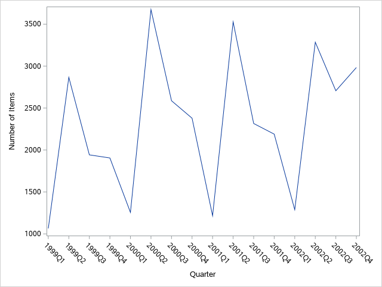
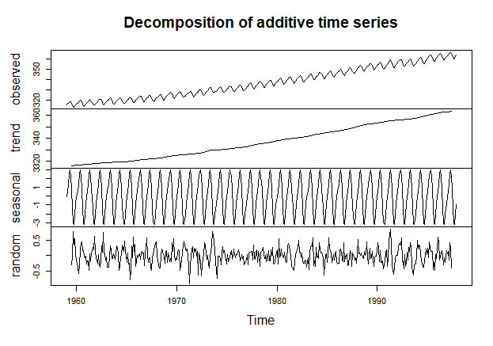
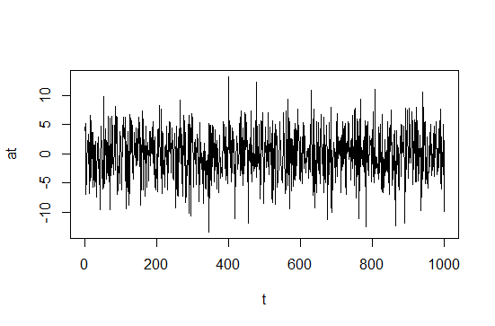
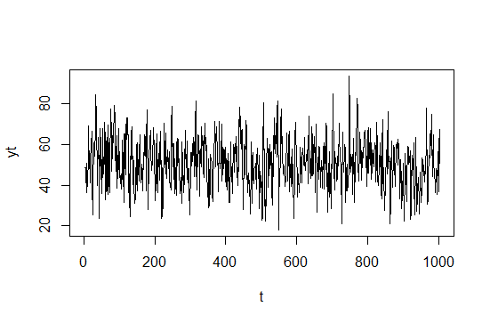
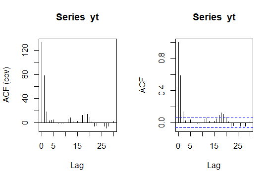

Series de tiempo
Las series de tiempo es una de la metodologías estadísticas más aplicada debido a que usualmente se tiene información histórica que se desea estudiar y se usan en diversos campos del conocimiento, por ejemplo en economía. Sin embargo actualmente es común encontrar aplicaciones en prácticamente cualquier área.
Uno de los principales usos de las series de tiempo, es hacer pronósticos de valores futuros de la variable de interés, usando la información disponible.
Introducción¶
En series de tiempo, es muy importante conocer el tipo de información que se está utilizando, debido a que los datos suelen tener comportamientos complejos, por lo que conviene tener la mayor información del fenómeno que se está estudiando.
A continuación se describirán algunos métodos que describen el problema.
Herramientas básicas de exploración de series de tiempo¶
Gráfica de series de tiempo¶
La principal herramienta que se usará será una gráfica de series de tiempo.
Esta consiste en graficar en el eje \(X\) el tiempo y en el eje \(Y\) las observaciones de la serie.
Esta gráfica nos permitirá ver el comportamiento del fenómeno a través del tiempo e identificar visualmente algunos de sus componentes con el fin de elegir el método más adecuado.

Ejemplo de una gráfica de serie de tiempo. Elaboración propia usando SAS ® OnDemand for Academics. Los datos provienen del dataset sashelp.orsales.
Estadísticas descriptivas¶
Las estadísticas descriptivas son de gran autilidad para conocer la distribución de la serie. Valores como la media, mediana, desviación estándar, mínimo o máximo, nos ayudarían a tener una idea del comportamiento de la serie.
Tambíen es recomendable realizar algunos gráficos que nos permitan visualizar su distribución tales como histogramas o diagrama de caja y bigotes (boxplot). En algunos casos, estos gráficos incluso podrían identificar si hay o no dos poblaciones.
Descomposición y suavizamiento de una serie de tiempo¶
La series de tiempo pueden exhibir distintos patrones y existen varios métodos para obtener sus componentes (tendecia, ciclo, estacionalidad y componentes irregulares); examinar dichos componentes puede ser útil para enternder la naturaleza del problema y pueden ser de gran ayuda a la hora de elegir un modelo.

Ejemplo de la descomposición de la serie de tiempo de C02 de R. Elaboración propia usando la función decompose() del software R.
Para más detalles vea el capítulo 3 de Hyndman & Athanasopoulos (2022).
Modelos de series de tiempo¶
En esta sección se dará una introducción más formal que nos permitirá estudiar más a fondo las series de tiempo.
Definiciones¶
Definición
Una serie de tiempo \(Y_t\), es una secuencia de valores numéricos indexados por una variable, generalmente tiempo \(t\).
Las series de tiempo pueden ser consideradas un caso particular de los procesos estocásticos en donde el parámetro o índice \(t\) es discreto. Para una revisión más completa de estos conceptos, visite la sección Procesos estocásticos.
Las series de tiempo pueden ser continuas o discretas. Comunmente en ciencias sociales o economía, las series de tiempo estan medidas en intervalos de tiempo regulares, ya sea de manera anual, trimestral, mensual o diaria, por lo que los índices \(t\) toman valores \(1,2,\dots,T\).
Un concepto muy importante en el estudio de las series de tiempo es la estacionariedad (tambien puede revisarse la sección introducción a los procesos estocásticos).
Serie de tiempo estacionaria
Se dice que una serie de tiempo, denotada \(X_t\) es estrictamente estacionaria si la distribución conjunta de \((X_{t_1},X_{t_2},\dots,X_{t_k})\) tiene la misma distribución que \((X_{t_1+h},X_{t_2+h},\dots,X_{t_k+h})\) para \(t_1,t_2,\dots,t_k,h \in \mathbb{N}\).
Un ejemplo de una serie de tiempo estacionaria estrictamente estacionaria sería una muestra aleatoria. Obsérvese que esta definición implica que la distribución es invariante en el tiempo. De acuerdo con Tsay (2010), esta es una condición muy fuerte y es dificil de verificarla empíricamente, por lo que a menudo se asume una condición más débil.
Serie de tiempo débilmente estacionaria
Se dice que una serie de tiempo \(X_t\) es débilmente estacionaria si sus primeros dos momentos son finitos y la media \(E(X_t)=\mu\) es constante y su función de covarianza \(Cov(X_t,X_{t+h})=\gamma (h)\) solo depende de \(h\), para \(h \in \mathbb{N}\).
Serie de tiempo estacionaria
Nos referiremos a una serie de tiempo estacionaria a aquella que sea débilmente estacionaria.
En términos prácticos, la gráfica de series de tiempo debería fluctuar alrededor de una constante y su variabilidad debería mantenerse más o menos estable a través del tiempo.
La autocovarianza entre \(Y_t\) y \(Y_{t+h}\), denotada por \(\gamma(h)\), mide el grado de asociación lineal entre \(Y_t\) y \(Y_{t+h}\) con la misma serie pero rezagada \(h\) periodos y se expresa como \(\gamma(h)=Cov(Y_t,Y_{t+h})=E\left((Y_t-E(Y_t))(Y_{t+h}-E(Y_{t+h}))\right)\).
Note que si \(h=0\), entonces se tiene la varianza de la serie y se puede denotar como \(\gamma_0 = Cov(Y_t,Y_t)=E\left((Y_t-E(Y_t))(Y_{t}-E(Y_{t}))\right) = Var(Y_t)\).
La correlación o función de autocorrelación (FAC) entre \(Y_t\) y \(Y_{t+h}\) también mide el grado de dependencia lineal de \(Y_t\) con la misma serie pero rezagada \(h\) periodos pero este valor se encuentra entre -1 y 1 y se expresa como
\( \rho(h)=\frac{Cov(Y_t,Y_{t+h})}{Var(Y_t)}=\frac{\gamma (h)}{\gamma_0} \)
Note que \(\rho_0=1\). La función de autocorrelación es la más usada debido a que es preferible usar cantidades entre 0 y 1. Si la serie \(Y_t\) es estacionaria, entonces la covarianza \(\lim_{h \to \infty} \gamma_h = 0\) y la autocorrelación \(\lim_{h \to \infty} \rho_h = 0\).
En la práctica se usa la función de correlación muestral (FACM) definida como:
\( \hat{\rho}({h})=\frac{\sum_{t=1}^{T-h}(y_t-\bar{y})(y_{t+h}-\bar{y})}{\sum_{t=1}^{T}(y_t-\bar{y})^2} \)
A continuación se presenta un tipo de serie de tiempo o proceso que cumple con esta característica.
Series de tiempo de ruido blanco¶
Proceso de ruido blanco
Sean \(\lbrace a_t \rbrace\) una sucesión de variables aleatorias independientes e idénticamente distribuidas con media 0 y varianza \(\sigma^2_{a}\) finita. Si la distribución de \(\lbrace a_t \rbrace\) es normal, entonces la serie se llama ruido blanco gaussiano.
Ruido blanco
Nos referiremos a una serie de tiempo de ruido blanco a aquella que sea ruido blanco gaussiana.
Propiedades de un proceso de ruido blanco
De acuerdo a la definición de estacionariedad, se mostrará que el proceso de ruido blanco es estacionario
- \(E(a_t) = 0, \forall t\)
- \(Var(a_t) = E(a_t^2) =\sigma^2, \forall t\)
- \(\gamma(h) = Cov(a_t,a_{t-h}) = 0, \forall h \ge 1\)
Ilustración de un proceso de ruido blanco
La siguiente imagen ilustra una realización de un proceso de ruido blanco \(a_t\) con varianza \(\sigma^2_{a} = 16\). Note que los valores se encuentran en un intervalo alrededor de cero y no presenta ningún patrón extraño, por lo que este proceso es un proceso estacionario.

Elaboración propia. Gráfico realizado con el software R.
Serie de tiempo lineal¶
Serie de tiempo lineal
Se dice que una serie de tiempo \(Y_t\) es lineal si puede expresarse como
\( \begin{align*} Y_t & = \mu + \sum_{i=0}^{\infty}\psi_i a_{t-i}\\ & = \mu + a_t + \psi_1 a_{t-1} +\psi_2 a_{t-2} + \dots \end{align*} \)
donde \(\psi_0 = 1\) y \(\mu\) es la media de la serie y \({a_t}\) es una serie de ruido blanco.
De la definición anterior, se entiende que una serie de tiempo lineal puede expresarse como una suma infinita ponderada de ruido, cuyos valores presentes y pasados afectan a la serie.
Propiedades de una serie de tiempo lineal
De la definición de serie de tiempo lineal y las propiedades del ruido blanco, se puede deducir los siguientes resultados
- \(E(Y_t) = \mu\)
- \(Var(Y_t) = Var(\sum_{i=0}^{\infty}\psi_i a_{t-i}) = \sigma^2_{a}\sum_{i=0}^{\infty}\psi^2_i\)
- \(\gamma(h) =\sigma^2_{a} \sum_{i=0}^{\infty}\psi_i \psi_{i+h}, h \in \mathbb{N}\)
Si la serie \(Y_t\) es estacionaria, necesariamente \(\sum_{i=0}^{\infty}\psi^2_i < \infty\), por lo que una condición necesaria y suficiente para que la varianza de \(Y_t\) sea finita es que \(\lim_{i \to \infty}\psi_i^2 = 0\).
Una manera de asegurar que la serie \(\sum_{i=0}^{\infty}\psi^2_i < \infty\) es convergente es imponer la condición de que \(\psi_i = \theta\) con \(|\theta|<1\). Para mayor información consulte la serie geométrica.
Serie de tiempo lineal
Suponga que se tiene una serie de tiempo \(a_t\) de ruido blanco con varianza \(\sigma^2_{a}=25\) y sea \(\mu=50\) una constante. Se definen los pesos \(\psi_1 = 2, \psi_2=0.5,\psi_3=0.1\) (todos los demas son iguales a cero). Entonces se define la serie de tiempo lineal como \(Y_t = 50 + a_t + 2 a_{t-1} + 0.5 a_{t-2} + 0.1 a_{t-3}\). La siguiente gráfica representa una realización del proceso

Elaboración propia usando el software R.
Note que esta serie es estacionaria ya que se cumple con la restricción de que la suma de los pesos al cuadrado (5.26) es finita.
La media o valor esperado \(E(Y_t)\) de esta serie es 50 (el promedio de la realización es 50.83), mientras que la varianza \(V(Y_t)\) es 131.5 (la varianza estimada fue de 133.02).Las autocovarianzas serían \(\gamma(1)=76.25,\gamma(2) =17.5\) y \(\gamma(3) = 2.5\).
La siguiente gráfica muestra del lado derecho las autocorrelaciones estimadas, mientras que del lado derecho se muestran las covarianzas estimadas.

Elaboración propia usando la función acf() del software R.
Las funciones de autocovarianza y autocorrelación muestrales muestran valores muy cercanos a los esperados, sin embargo a partir de los rezagos 10 se aprecian valores que debieran ser cero; esto se debe a que la FACM es una estimación de los valores observados, por lo que se debe tener cuidado al interpretar la FACM.
Operador de Retraso¶
En la literatura de series de tiempo, existe un operador que nos permite trabajar con las series de tiempo y sus valores en el tiempo. A dicho operador se le conoce como operador de retraso o Backward Shift Operator y se denota como \(B\).
Propiedades del operador de Retraso
El operador de retraso \(B\) tiene las siguientes propiedades:
- \(B Y_t = Y_{t-1}\)
- \(B^h Y_t = Y_{t-h}\)
- \(B^{-1} Y_t = Y_{t-(-1)} = Y_{t+1}\)
- \(B^0 Y_t = 1Y_t = Y_t\)
Note que usando este operador, es posible definir funciones o polinomios que dependan de \(B\) conocidos como funciones de transferencia (Box et al. 2016). Un ejemplo de estas funciones es el filtro lineal revisado en la sección anterior.
\( \begin{align*} Y_t & =\mu + a_t +\psi_1 a_{t-1} +\psi_2 a_{t-2} + \dots\\ & = \mu + (1+\psi_1B + \psi_2B^2 + \dots)a_t\\ & = \mu + \psi(B)a_t \end{align*} \)
Existen funciones de transferencia más complejas pero serán estudiadas en secciones posteriores.
Modelos ARIMA¶
Una forma de modelar series de tiempo es usando los modelos ARIMA o Autorregresivos Integrados de Medias Móviles tambien conocidos como modelos Box-Jenkins. Para una referencia completa y detallada vea Box et al. (2016).
Primero se introducirán los modelos Autorregresivos (AR), Medias móviles (MA) y los Autorregresivos de medias móviles (ARMA). Posteriormente se introducirá el concepto de raíz unitaria y modelos integrados (ARIMA), así como los modelos estacionales (SARIMA).
La estimación de parámetros se discutirá de forma muy general y finalmente se mencionará la validación de supuestos y cómo realizar predicciones.
Modelos autorregresivos¶
El modelo autorregresivo es muy util para modelar muchos fenómenos, sobre todo relacionados con economía y finanzas ya que típicamente el valor actual dependerá de sus valores anteriores.
Por simplicidad se puede comenzar a estudiar el modelo Autorregresivo de orden 1. Este modelo se puede expresar de la siguiente forma:
\( Y_t = \phi_0 + \phi_1 Y_{t-1} + a_t \)
donde \(a_t\) es un término de error de ruido blanco con varianza \(\sigma^2 _a\) y \(\phi_0\), \(\phi_1\) son parámetros del modelo. A este modelo se le conoce como modelo autorregresivo de orden 1 y se denota como AR(1).
Reordenando los términoes, es posible expresarlo en forma más compacta.
\( (1-\phi_1 B) Y_t = \phi_0 + a_t \)
Note que este modelo es muy parecido a un modelo de regresión lineal simple, con la diferencia de que la variable explicativa es ella misma pero un periodo anterior. Sin embargo, este modelo cumple con una propiedad muy interesante.
Propiedad Markoviana
Se dice que una serie de tiempo cumple con la propiedad markoviana si:
\( E(Y_t|Y_{t-1} = y_{t-1}) = \phi_0 + \phi_1 y_{t-1} \)
Es decir, si el valor de la serie en el periodo anterior es conocido \(y_{t-1}\), es posible conocer el valor esperado de la serie en el periodo actual.
En otras palabras, el valor actual y el anterior están correlacionados, pero no así para periodos anteriores.
Para mayores detalles sobre esta propiedad vea la sección cadenas de Markov.
Propiedades del modelo Autorregresivo de orden 1
Se dice que \(Y_t = \phi_0 + \phi_1 Y_{t-1} + a_t\) es un proceso autoregresivo de orden 1. Si es proceso es estacionario, entonces
- \(E(Y_t) = \mu = \frac{\phi_0}{1-\phi_1}\)
- \(Var(Y_t) = \gamma_0 = \frac{\sigma^2 _a}{1-\phi^2_1}\)
- \(\gamma(h) = \phi_1 \gamma(h-1)\)
- \(\rho(h) = \phi_1^h\)
Del resumen anterior es posible deducir el siguiente resultado.
Condición de estacionariedad del modelo AR(1)
Una condición necesaria y suficiente para que un proceso AR(1) sea estacionario es la siguiente:
\( |\phi_1| < 1 \)
Note que este resultado es equivalente si las raíces del polinomio \(\phi(B)=0\) son mayores a 1 en valor absoluto.
Derivación de la media y varianza de un proceso AR(1)
Si se asume que el proceso AR(1) es estacionario, es decir tiene media constante \(E(Y_t) = E(Y_{t-1}) = \mu\), entonces
\( \begin{align*} \mu &= E(Y_t) \\ &=E(\phi_0 + \phi_1 Y_{t-1} + a_t) \\ &=\phi_0 + \phi_1 E(Y_{t-1}) + E(a_t)\\ &=\phi_0 + \phi_1 \mu \end{align*} \)
donde \(\mu\) es el nivel de la serie.
Note que, bajo el supuesto de estacionriedad el nivel de la serie \(\mu\) puede representarse como \(\mu = \frac{\phi_0}{1-\phi_1}\) y por lo tanto \(\phi_1\) no puede ser igual a 1. También puede notarse que \(\phi_0 =\mu(1-\phi_1)\), por lo que \(\phi_0 = 0\) si \(\mu = 0\), en otras palabras, el término \(\phi_0\) no aparecerá en el modelo únicamente si el nivel de la serie es cero.
Nuevamente asumiendo el supuesto de estacionariedad, la varianza \(Var(Y_t) = Var(Y_{t-1}) = \gamma_0\) es constante y la covarianza \(Cov(Y_t,Y_{t+h}) = \gamma (h)\) no depende de \(t\), sino únicamente de la distancia \(h\) entre ellas.
Es común que trabajar con las series centradas, es decir \(Z_t = Y_t - \mu\) y por lo tanto únicamente se trabaja con el modelo \(Z_t = \phi_1 Z_{t-1} + a_t\). La varianza de la serie centrada puede expresarse como
\( \begin{align*} \gamma_0 & = Var(Z_t)\\ & = E(Z_t^2)\\ &= E(\phi_1^2 Z^2_{t-1}+a^2_t)\\ &= \phi_1^2E(Z^2_{t-1}) + E(a^2_t)\\ &= \phi_1^2 Var(Z_{t-1}) + Var(a_t)\\ &= \phi_1^2 Var(Z_t) + \sigma^2_a\\ &= \phi_1^2 \gamma_0 + \sigma^2_a \end{align*} \)
Por lo tanto si la serie es estacionaria se obtiene \(\gamma_0 = \frac{\sigma^2 _a}{1-\phi^2_1}\) y necesariamente \(\phi^2_1 < 1\) ó \(-1 < \phi_1 < 1\).
Derivación de la función de covarianza y autocorrelación de un proceso AR(1)
Para simplificar los cálculos, se puede calcular la covarianza de \(Z_t\) y \(Z_{t-h}\), con \(h > 0\), asumiendo que \(Z_t\) es estacionaria.
\( \begin{align*} Cov(Z_t,Z_{t-h}) &= E(Z_t Z_{t-h})\\ &= E(Z_t ( \phi_1 Z_{t-h-1} + a_{t-h}) )\\ &= E(\phi_1 Z_t Z_{t-h-1} + Z_t a_{t-h})\\ &= E(\phi_1 Z_t Z_{t-h-1}) + E( Z_t a_{t-h})\\ &= \phi_1 E(Z_t Z_{t-h-1}) + E( Z_{t-h} a_t)\\ &= \phi_1 \gamma(h-1) \end{align*} \)
Por lo que la función de covarianza está dada por:
\( \gamma(h) = \phi_1 \gamma(h-1) \)
Recordando que \(\gamma_0\) es la varianza de la serie.
Para obtener la función de autocorrelación, simplemente se divide la función de covarianza entre la varianza, por lo que se tiene que:
\( \rho(h) = \begin{cases} 1 & \text{ si } h=0\\ \phi_1^h & \text{ si } h>0 \end{cases} \)
Este proceso puede generalizarse de tal forma que se obtene el modelo Autorregresivo de orden \(p\).
\( Y_t = \phi_0 + \phi_1 Y_{t-1} + \dots + \phi_p Y_{t-p} + a_t \)
O en usando operadores de retraso, se puede expresar como:
\( \begin{align*} Y_t - \phi_1 Y_{t-1} - \dots - \phi_p Y_{t-p} &= \phi_0 + a_t\\ (1-\phi_1 B - \dots - \phi_p B^p) Y_t & = \phi_0 + a_t\\ \phi(B) Y_t & = \phi_0 + a_t \end{align*} \)
Las propiedades de este modelo para órdenes superiores están fuera del alcance de este blog, sin embargo, se pueden consultar con mayor detalle en Tsay (2010) o Box et al. (2016).
Modelos de Medias Móviles¶
Otro modelo ampliamente usado en economía y otros campos es el modelo de medias móviles. El modelo de Medias Móviles o Moving Average de orden 1 se define como sigue:
\( Y_t = m + a_t - \theta_1 a_{t-1} \)
donde \(a_t\) es un término de error de ruido blanco con varianza \(\sigma^2 _a\) y \(\theta_1\) es un parámetro del modelo y \(m\) una constante.
Observése que es una serie de tiempo lineal, aunque el parámetro \(\theta_1\) aparece con signo negativo.
Propiedades del modelo de medias móviles de orden 1
Se dice que \(Y_t = m + a_t - \theta_1 a_{t-1}\) es un proceso de medias móviles de orden 1. Entonces
- Es un proceso estacionario
- \(E(Y_t) = m\)
- \(Var(Y_t) = \gamma_0 = \sigma^2_a (1+\theta_1^2)\)
- \(\gamma(h) = -\theta_1\sigma^2_a\) si \(h = 1\)
- \(\rho(h) = \frac{-\theta_1}{1+\theta_1^2}\) si \(h = 1\)
Derivación de la media y varianza de un proceso MA(1)
Usando las propiedades de la esperanza, se puede encontrar fácilmente la media del proceso.
\( E(Y_t) = E(m + a_t - \theta_1 a_{t-1}) = E(m)+E(a_t) - \theta_1 E(a_{t-1}) = m \)
Por lo que su media no depende del tiempo. De forma similar es posible encontrar la varianza del proceso.
\( \begin{align*} Var(Y_t) &= E((Y_t-E(Y_t))^2)\\ &= E((Y_t-m)^2)\\ &=E(a_t^2-2 \theta_1 a_t a_{t-1}+\theta_1^2 a_{t-1}^2)\\ &=E(a_t^2) - 2 \theta_1 E(a_t a_{t-1}) + \theta_1^2 E(a_{t-1}^2)\\ &=\sigma^2_a + \theta_1^2 \sigma^2_a\\ &=\sigma^2_a (1+\theta_1^2) \end{align*} \)
Derivación de la función de covarianza y autocorrelación de un proceso MA(1)
Para simplificar los cálculos, se puede calcular la covarianza de \(Z_t\) y \(Z_{t-h}\), con \(h > 0\), donde \(Z_t = Y_t-m = a_t - \theta_1 a_{t-1}\).
\( \begin{align*} Cov(Z_t,Z_{t-h}) &= E(Z_t Z_{t-h})\\ &= E((a_t - \theta_1 a_{t-1}) Z_{t-h} )\\ &= E(a_t Z_{t-h}-\theta_1 a_{t-1} Z_{t-h})\\ &= E(a_t Z_{t-h})- E(\theta_1 a_{t-1} Z_{t-h})\\ &= -\theta_1 E(a_{t-1} Z_{t-h}) \end{align*} \)
Por lo que
\( \gamma(h) = \begin{cases} 0 & \text{ si } h>1\\ -\theta_1\sigma^2_a & \text{ si } h = 1 \end{cases} \)
Usando el resultado anterior, es posible obtener la función de autocorrelación dividiendo la función de covarianza entre la varianza, por lo que se tiene que:
\( \rho(h) = \begin{cases} 1 & \text{ si } h=0\\ \frac{-\theta_1}{1+\theta_1^2} & \text{ si } h=1\\ 0 & \text{ si } h>1 \end{cases} \)
Aunque los procesos de media móvil son estacionarios, es importante mencionar que deben de cumplir con una condición especial conocida como invertibilidad
Invertibilidad
Se dice que un proceso lineal es invertible si
- \(\sum_{i=0}^{\infty}|\psi_i|<\infty\)
- Las raíces del polinomio \(\theta(B)=0\) son mayores a 1 en módulo.
Es decir, si los pesos \(\psi_i\) son absolutamente sumables, el proceso es invertible.
Básicamente, la idea de invertibilidad, es poder expresar un proceso MA como un proceso AR estacionario. En el siguiente ejemplo, se mostrará la idea de invertibilidad para un proceso MA(1).
Ilustración de invertibilidad de un proceso MA(1)
Considere un proceso MA(1) con media 0, \(Z_t = a_t - \theta_1 a_{t-1}\), es posible expresar el proceso de ruido blanco \(a_t\) como función de la serie y de ruido anterior de forma iterativa de la siguiente manera
\( \begin{align*} a_t &= Z_t + \theta_1 a_{t-1}\\ & = Z_t + \theta_1 Z_{t-1}+\theta_1^2 a_{t-2}\\ & = Z_t + \theta_1 Z_{t-1}+\theta_1^2 Z_{t-2} + \theta_1^3 a_{t-3}\\ & = Z_t + \theta_1 Z_{t-1}+\theta_1^2 Z_{t-2} + \theta_1^3 Z_{t-3} + \theta_1^4 a_{t-4}\\ & = Z_t + \theta_1 Z_{t-1}+\theta_1^2 Z_{t-2} + \theta_1^3 Z_{t-3} + \dots \end{align*} \)
Se esperaría que los impactos más alejados tuvieran menos efecto en el ruido actual, es decir,
\( \lim_{i \to \infty} \theta_1^i = 0 \)
Por lo que esto se cumple necesariamente si \(|\theta_1|<1\). Note que esto es equivalente a \(\psi_0 = 1,\;\psi_1 = \theta_1,\;\psi_2 = \theta_1^2,\; \dots\), por lo que un proceso invertible puede representarse como un proceso autorregresivo estacionario.
Esta demostración tambien puede obtenerse usando funciones de transferencia. El modelo MA(1) puede expresarse de la siguiente manera:
\( Y_t = (1-\theta_1 B) a_t \)
Para saber si el modelo es invertible, las raíces del polinomio de medias móviles \(\theta(B)=1-\theta_1 B=0\) deben ser mayores a 1 en valor absoluto, por lo que la solución es \(B=\frac{1}{\theta_1}\) cumple esta restricción si \(|\theta_1|<1\) o \(|\frac{1}{\theta_1}|>1\).
En conclusión, el proceso podría representarse como un modelo Autorregresivo estacionario con infinidad de parámetros, o de forma más parsimoniosa es posible representarlo como un proceso de media móvil de orden 1.
Un proceso MA no invertible
Considere el siguiente modelo lineal \(Y_t = a_t + 2 a_{t-1} + 0.5 a_{t-2}\). Este modelo puede considerarse como un modelo MA(2), pero se comprobará que no es invertible.
Expresándolo como en términos del polinomio autorregresivo \(Y_t = (1+2B + 0.5 B^2)a_t\), es posible encontrar que las raices del polinomio son \(-\sqrt{2}-2\) y \(\sqrt{2}-2\).
Como el valor absoluto de alguna de las soluciones del polinomio no es mayor a 1, se concluye que el proceso no es invertible, por lo que no admite representación como un Autorregresivo estacionario.
Las propiedades y generalizaciones de este modelo están fuera del alcance de este blog, sin embargo, se pueden consultar con mayor detalle en Tsay, R. (2010) o Box et al., (2016) .
Modelos ARMA¶
El modelo ARMA(p,q) o Autorregresivo de Medias Móviles de orden \(p\) y \(q\) combina tanto a los Modelos Autorregresivos para la parte de la serie de tiempo y las Medias Móviles para la serie de ruido. Este modelo es muy flexible y permite modelar muchas series.
Una serie de tiempo sigue un proceso ARMA(1,1) si puede representarse de la siguiente manera:
\( Y_t-\phi_1 Y_{t-1} = \mu + a_t - \theta_1 a_{t-1} \)
o en términos de operadores de retraso
\( (1-\phi_1 B)Y_t = \mu + (1-\theta_1 B) a_t \)
o funciones de tranferencia.
\( \phi(B)Y_t=\mu+\theta(B)a_t \)
Es importante mencionar que es deseable que los modelos ARMA(1,1) cumplan con las propiedades de estacionariedad e inveribilidad, con el fin de que se faciliten algunos cálculos.
A continuación se mencionan algunas propiedades del modelo ARMA(1,1)
Propiedades del modelo ARMA(1,1)
Sea \(Y_t-\phi_1 Y_{t-1} = \mu + a_t - \theta_1 a_{t-1}\). Si el proceso es estacionario, entonces se tiene que:
- \(E(Y_t) = \frac{mu}{1-\phi_1}\)
- \(Var(Y_t) = \frac{(1-2\phi_1\theta_1 + \theta_1^2)\sigma^2_a}{1-\phi_1^2}\)
- \(\gamma(1)=\frac{(1-\theta_1 \phi_1)(\phi_1 - \theta_1)\sigma^2_a}{1-\phi_1^2}\)
- \(\gamma(k) = \phi_1 gamma(k-1), \;k\ge 2\)
Condiciones de estacionariedad e invertibilidad
Un proceso ARMA(1,1) es estacionario e invertible si y solo si:
- \(|\theta_1| < 1\) y \(|\phi_1| < 1\)
Las propiedades y generalizaciones de este modelo están fuera del alcance de este blog, sin embargo, se pueden consultar con mayor detalle en Tsay, R. (2010) o Box et al., (2016) .
Modelos Espacio-Estado¶
En décadas recientes se han presentado un mayor número de huracanes categoría 5 en el Océano Pacífico, el cual a pesar de ser un evento raro tiene consecuencias muy graves para la población afectada, por lo que es necesario estudiar este fenómeno natural y sus posibles causas con el fin de poder modelar su incidencia a través del tiempo y poder alertar a la población que vive en las zonas costeras.
Imagen obtenida del programa Shipping Forecast de BBC Radio 4.
Los modelos Espacio-Estado son una metodología muy amplia que permite representar una gran cantidad de modelos de series de tiempo.
La principal ventaja de esta metodología es su flexibilidad debido a que puede abordar una gran cantidad de metodologías usadas en series de tiempo, por ejemplo los modelos ARIMA, suavizamiento exponencial y algunos modelos de regresión pueden ser representados como modelos Espacio-Estado (Durbin y Koopman 2012).
Otra ventaja de los modelos Espacio-Estado es que pueden ser representados de forma recursiva y puede hacerse uso de técnicas computacionales. También este tipo de modelos admite valores faltantes, debido a que dichos valores pueden ser estimados posteriormente mediante algunas de las técnicas que el mismo modelo emplea.
Definición¶
El modelo de Espacio-Estado puede ser representado de la siguiente forma:
\( \begin{align} y_t &= Z_t \alpha_t + \varepsilon_t,\; \varepsilon_t \sim N(0,H_t) \\ \alpha_{t+1} &= T_t \alpha_t + R_t \eta_t,\; \eta_t \sim N(0,Q_t) \end{align} \)
donde \(y_t\) es un vector de dimensión \(p \times 1\) que representa las observaciones en el tiempo \(t\) con \(t=1, \dots , n\) y \(\alpha_t\) es el \textit{vector de estados} de dimensión \(m \times 1\) el cual es no observable.
La idea de este modelo es que el comportamiento las observaciones \(y_t\) en el tiempo \(t\) está determinado por el vector de estados \(\alpha_t\) más un ruido aleatorio.
Bibliografía¶
Box, G., Jenkins, G., Reinsel, G., & Ljung, G. (2016). Time Series Analysis: Forecasting and Control. John Wiley & Sons.
Durbin, J., y S. J. Koopman. 2012. Time Series Analysis by State Space Methods. Oxford, UK: Oxford University Press.
Hyndman, R., & Athanasopoulos, G. (2022). Forecasting: Principles and Practice (3rd ed). OTexts. https://Otexts.com/fpp3/
Tsay, R. (2010). Analysis of Financial Time Series (Third Edition). John Wiley & Sons.
Muchas de las ideas fueron tomadas del curso Series de tiempo impartido por la Dra. Martha Elva Ramírez en Primavera del 2022 en el Colegio de Postgraduados, Campus Montecillo.